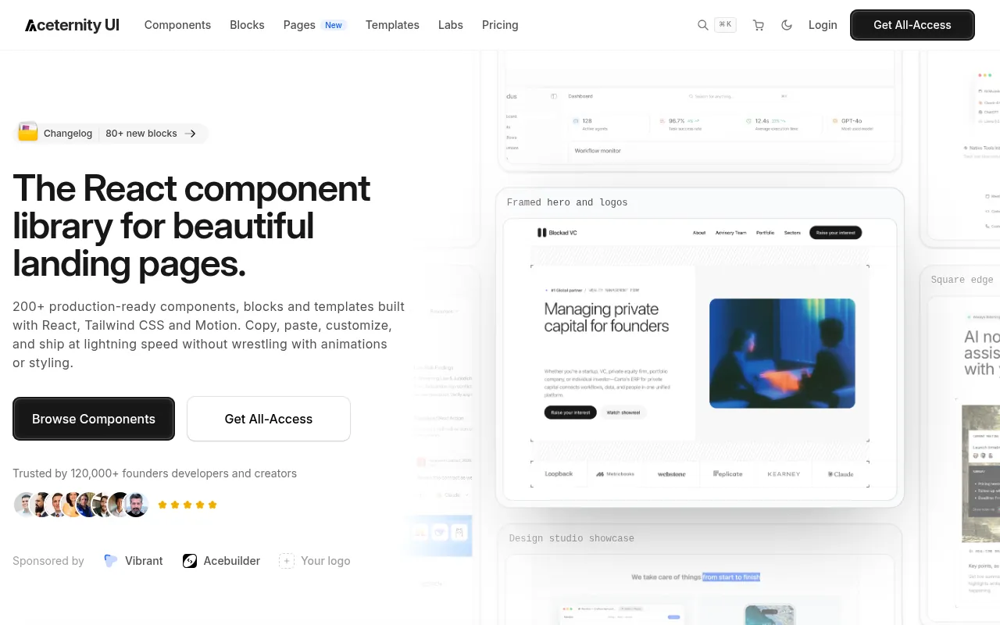
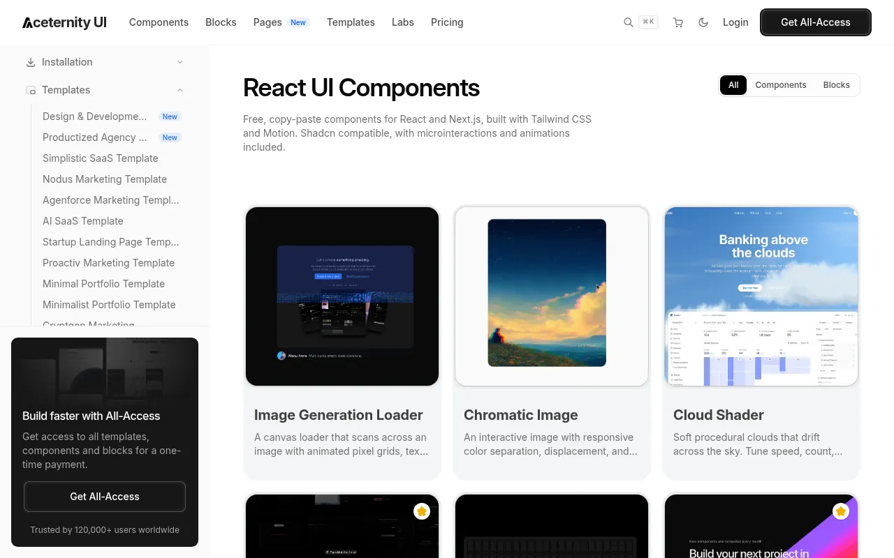
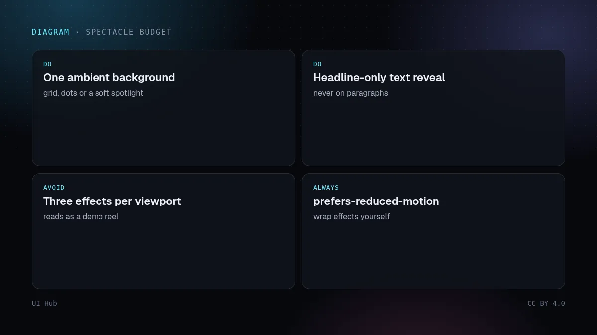

Aceternity UI 由 Manu Arora 创建，是一套用 React、Tailwind CSS 和 Motion（原 Framer Motion）写的可复制组件。它以炫目的特效出名：聚光灯和光束背景、3D 卡片、动态网格、视差滚动首屏。免费组件可以直接复制，另有付费的模板和区块。


一屏叠三个特效、给正文加动画、给装数据的卡片加 3D 倾斜。这样看起来像特效合集，在低端手机上也很耗性能。一定要尊重 prefers-reduced-motion，有些特效默认不处理，需要自己包一层。

Aceternity 是「克制的 fancy」这一风格的参考之一：每页借一个标志性特效，排版和间距承担主要工作。在本站搜索「aceternity」，可以看到我们收录的所有 Aceternity 组件及实时预览。